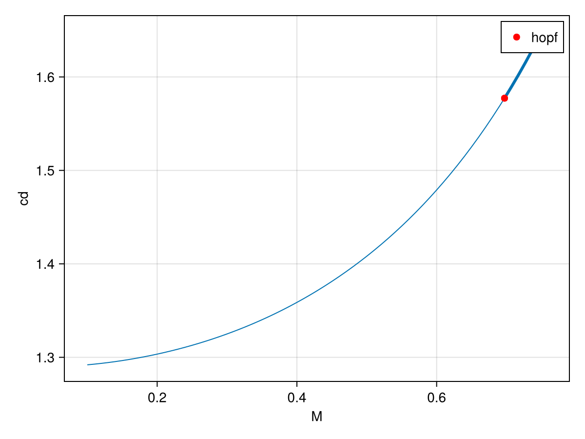
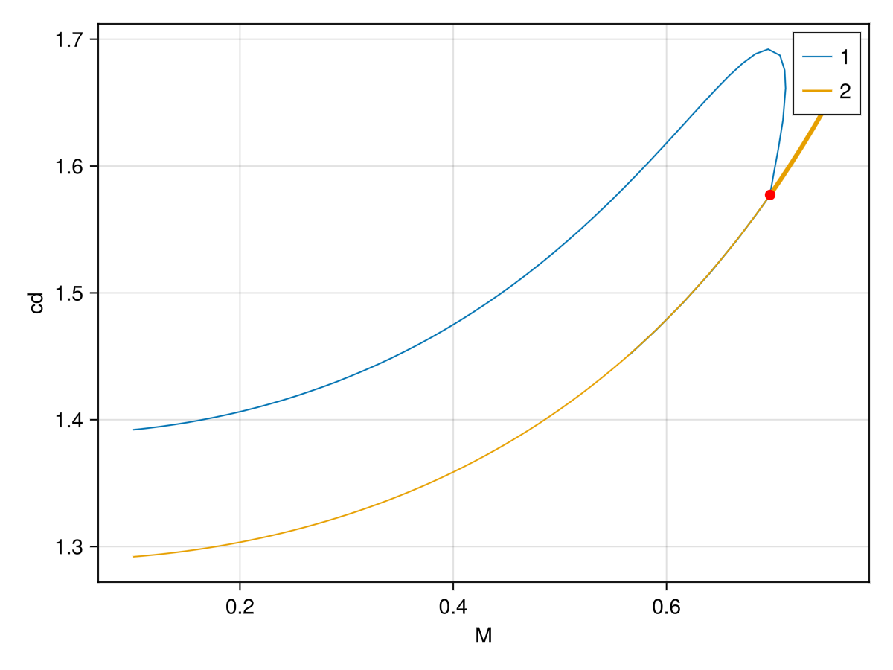

🟤 Compressible flow past a cylinder: state-dependent mass, Hopf bifurcation and periodic orbits
This tutorial is about the 2-D compressible flow past a cylinder. It is a translation to Gridap of the example from the ff-bifbox paper [DouglasJolivet]. The equations are the following:
$
\begin{align} \left(\gamma{}M^2p+1\right)\left(\frac{\partial\boldsymbol{u}}{\partial t}+\boldsymbol{u}\boldsymbol{\cdot}\boldsymbol{\nabla}\boldsymbol{u} \right)+T\left(\boldsymbol{\nabla}{}p-\boldsymbol{\nabla}\boldsymbol{\cdot}\boldsymbol{\tau}\right)&=0,\ \hspace{-1mm}\left(\gamma{}M^2p+1\right)\left(\frac{\partial{}T}{\partial t}+\boldsymbol{u}\boldsymbol{\cdot}\boldsymbol{\nabla}{}T+\left(\gamma-1\right)T\left(\boldsymbol{\nabla}\boldsymbol{\cdot}\boldsymbol{u}\right)\right)-\left(\gamma-1\right)\gamma{}M^2T\left(\boldsymbol{\nabla}\boldsymbol{u}\boldsymbol{:}\boldsymbol{\tau}\right)-\frac{\gamma{}T}{RePr}\nabla^2T&=0,\ \gamma{}M^2T\left(\frac{\partial{}p}{\partial t}+\boldsymbol{u}\boldsymbol{\cdot}\boldsymbol{\nabla}{}p\right)-\left(\gamma{}M^2p+1\right)\left(\frac{\partial{}T}{\partial t}+\boldsymbol{u}\boldsymbol{\cdot}\boldsymbol{\nabla}{}T-T\left(\boldsymbol{\nabla}\boldsymbol{\cdot}\boldsymbol{u}\right)\right)&=0, \end{align} $
where $\tau_{ij}=\frac{\partial u_i}{\partial x_j}+\frac{\partial u_j}{\partial x_i}-\frac{2}{3}\delta_{ij}\frac{\partial u_k}{\partial x_k}$. We refer to the paper[DouglasJolivet] for the boundary conditions. The unknowns are $q=(u,T,p)$: the velocity $u$, the temperature $T$ and the pressure $p$. The parameters are
\[p = (Re, Pr, M, \gamma),\]
where $Re$ is the Reynolds number, $Pr$ the Prandtl number, $M$ the Mach number and $\gamma$ the ratio of specific heats. The semi-discretized problem is a differential-algebraic equation with a state-dependent mass matrix:
\[M(q)\,\partial_t q = F(q;p).\]
The pressure does not carry a time derivative, so $M(q)$ is singular. This is essential for the stability analysis: the relevant spectrum is the generalized eigenvalue problem $J\phi=\lambda M\phi$, not the spectrum of $J$ alone.
This is a massive problem to be run on github CI or even on your laptop. Apart from the size, it is not very difficult. We try our best to generate the plot online but this cannot be done for everything...
Mesh and finite element spaces
The geometry is the rectangle $[-100,150]\times[-100,100]$ minus the unit-diameter disk at the origin. The mesh generator and the weak forms are in the helper files distributed with the example.
cd(@__DIR__)
using CairoMakie
CairoMakie.activate!()
using GridapMakie
using Gridap.Geometry
using GridapGmsh
using LinearAlgebra
using BifurcationKit, GridapBifurcationKit
const BK = BifurcationKit
path = "../../../example/"
include(path * "mesh_cylinder.jl")
include(path * "cylinder_defs_kernel.jl")
full = true
meshfile = joinpath(path, "meshes", full ? "cylinder_full.msh" : "cylinder.msh")
isfile(meshfile) || generate_cylinder_meshes(; n0 = 25)
model = GmshDiscreteModel(meshfile; has_affine_map = true, renumber = false)
X, Y = cylinder_spaces(model; full)
order = 4
Ω, dΩ, bsds = cylinder_measures(model, order)
forms = cylinder_forms(bsds, dΩ)
(; res, jac, mass, dM, apply_mass) = forms
cylinder_drag = prep_cylinder_drag(model, order)The spaces are Taylor–Hood elements: velocity and temperature of degree 2, pressure of degree 1. The velocity satisfies the no-slip condition on the cylinder and the inlet condition upstream; the temperature is fixed at the inlet.
Weak forms and the state-dependent mass
The residual res and its jacobian jac are written close to the variational formulation; their full expressions are in cylinder_defs_kernel.jl. The next functions are a specific norm, a record/plot function for continuation.
function Norm(x) qtemp = FEFunction(X, x, Gridap.FESpaces.zero_dirichlet_values(X)) n = sum(∫(qtemp⋅qtemp)dΩ) s = sum(∫(1)dΩ) sqrt(n/s)endfunction record(x, p; iter = nothing, state = nothing, k...) qrec.free_values .= x # qrec is a cont defined below u, = qrec Re = isnothing(iter) ? 80.0 : BK.getparams(iter, state).Re return (;cylinder_drag(qrec, Re)..., uxmin = minimum(get_free_dof_values(u)), uxmax = maximum(get_free_dof_values(u)), )endfunction plot_solution(ls, x, p; id_var = 1, ax1, iter, state, k...) # qrec is a cont defined below if length(x) == length(qrec.free_values) qrec.free_values .= x else qrec.free_values .= x[1:end-2] # for hopf end var_to_plot = qrec[id_var] hm = plot!(ls, Ω, var_to_plot, colormap=:bwr) xlims!(ls, -5, 30); ylims!(ls, -7, 7) gc = ls.layoutobservables.gridcontent[] gp = gc === nothing ? ls.figure[1, 2] : gc.parent[gc.span.rows, maximum(gc.span.cols) + 1] Colorbar(gp, hm)endplot_solution (generic function with 1 method)We pass these forms to the bifurcation problem:
par0 = cyl_par(M = 0.1, Re = 70.0)
const qrec = zero(X) # place holder used for plotting
q0 = interpolate_everywhere([VectorValue(1.0, 0.0), 1.0, 0.0], X) # basic guess for newton
prob = GridapBifProblem(res, q0, par0, Y, X, dΩ, (@optic _.M);
jac,
mass,
∇xM = dM,
applyM = apply_mass,
d2res = BK.FiniteDifferences(),
record_from_solution = record,
plot_solution = plot_solution
)The ∇xM and applyM keywords are optional but useful: they tell BifurcationKit.jl how to differentiate and apply the mass operator without assembling it repeatedly. The default parameter derivatives are computed by finite differences.
Base flow and continuation in the Mach number
We compute the base state with a Newton solver:
# shift invert eigensolver
eig = BK.EigArnoldiMethod(sigma = 0.1 + 0.7im, which = BK.LM(), tol = 1e-7)
optn = BK.NewtonPar(tol = 1e-8, max_iterations = 15, verbose = true,
eigsolver = eig,)
sol = BK.solve(prob, BK.Newton(), optn; normN = Norm)fig = Figure(size = (1000, 500))
ls1 = Axis(fig[1, 1], title = "$(sol.prob.params)")
plot_solution(ls1, sol.u, nothing; id_var = 1, ax1 = 1, iter = 1, state = 1)
figThe base state is then continued in the Reynolds number fixed.
opts = BK.ContinuationPar(p_max = 0.75, ds = 1e-2, dsmax = 1e-2, detect_bifurcation = 3, newton_options = optn, nev = 30, tol_stability = 1e-6, save_eigenvectors = false,)prob.u0 .= sol.ubr = BK.continuation(prob, BK.Natural(), opts; callback_newton = BK.cbMaxNorm(1), normC = Norm )BK.plot(br)[1]
Hopf bifurcation curve
We can continue the previously found Hopf bifurcation point:
opts_hopf = ContinuationPar(p_max = 0.7, p_min = 0.0, ds = 1e-1, dsmax = 1e-1 detect_bifurcation = 0, newton_options = optn, tol_stability = 1e-6, detect_event = 0)br_h = BK.continuation(br, 1, (@optic _.M), opts_hopf; alg = Natural(), update_minaug_every_step = 1, normC = norminf, bdlinsolver = BorderingBLS(DefaultLS()), jacobian_ma = BK.MinAugMatrixBased(), callback_newton = callback_hopf, usehessian = true, detect_codim2_bifurcation = 0,)BK.plot(br_h)[1]
Periodic orbits
The branch of periodic orbits is computed with the trapeze (Crank–Nicolson) method. Since the underlying problem carries a mass matrix, Trapeze automatically solves the mass-weighted time steps.
A first guess is obtained from the Hopf eigenvector:
M = 20pred = BK.predictor(hp, 0.3; ampfactor = 0.18)list_of_time_steps = [pred.orbit(t) for t in range(0, 2pi; length = M + 1)[1:M]]orbitguess_f = vcat(reduce(vcat, list_of_time_steps), pred.period)ϕ = normalize(rand(length(prob.u0)))poTrap = BK.Trapeze(BK.re_make(prob, params = par_po), ϕ, zero(prob.u0), M, length(prob.u0); jacobian = BK.FullLU())BK.updatesection!(poTrap, orbitguess_f, par_po)function plot_po(ax, x, p; ax1, iter, state, k...) wrap = BK.getprob(iter) trap = BK.get_discretization(wrap) sol_t = BK.get_periodic_orbit(poTrap, x, nothing) lines!(ax, sol_t.t, sol_t.u[end,:])endWe find the orbit with a preconditioned Newton–Krylov solver. The circulant preconditioner is built from the orbit averaged jacobian:
using FFTWFFTW.set_num_threads(6)P = BK.POTrapCirculantPrec(poTrap, orbitguess_f, par_po, ref = :average)ls_po = BK.GMRESIterativeSolvers(verbose = true, reltol = 1e-6, abstol = 1e-8, N = length(poTrap), restart = 50, maxiter = 60, Pl = P, log = true)eig_po = BK.EigArnoldiMethod(x₀ = rand(length(prob.u0)))optn_po = BK.NewtonPar(linsolver = ls_po, eigsolver = eig_po, verbose = true, tol = 1e-6, max_iterations = 15)outpo = BK.newton(poTrap, orbitguess_f, optn_po; normN = NormL2T, callback = BK.cbMaxNorm(1))
Finally, we continue the periodic orbit in the Mach number. The finalise callback refreshes the circulant preconditioner after each successful continuation step. The record_po callback stores the extrema of the drag coefficient along the orbit, so the bifurcation diagram is directly the amplitude of the drag oscillation:
function update_preconditioner(z, tau, step, contResult; state, iter) success = BK.converged(state) bisection = BK.in_bisection(state) if success && !bisection par = BK.getparams(iter, state) contparams = iter.contparams @reset par.M = par.M + contparams.ds Prec = contparams.newton_options.linsolver.Pl trap = BK.get_discretization(BK.getprob(iter)) BK.update_preconditioner!(Prec, trap, z.u, par; ref = :average) end return trueendfunction record_po(x, p; iter, state, k...) par = BK.getparams(iter, state) sol_t = BK.get_periodic_orbit(poTrap, x, par) cds = [_cd(sol_t.u[:, j], par) for j in axes(sol_t.u, 2)] cdm, cdx = extrema(cds) return (; cdx, cdm, amp = cdx - cdm, period = x[end])endrecord_po (generic function with 1 method)opts_cont_po = BK.ContinuationPar(p_max = 0.75, p_min = 0.0, ds = 9e-3, dsmax = 9e-3, max_steps = 50, detect_bifurcation = 0, newton_options = BK.NewtonPar(optn_po; max_iterations = 5), )br_po = BK.continuation(poTrap, outpo.u, BK.PALC(tangent = BK.Secant()), opts_cont_po; linear_algo = BK.MatrixFreeBLS(ls_po, false), verbosity = 2, normC = NormL2T, plot = true, finalise_solution = update_preconditioner, record_from_solution = record_po, plot_solution = plot_po)f, ax = BK.plot(br, br_po)f
References
- DouglasJolivet
Douglas, Christopher M., and Pierre Jolivet. ff-bifbox: A scalable, open-source toolbox for bifurcation analysis of nonlinear PDEs. Computer Physics Communications 326 (2026): 110221. DOI: 10.1016/j.cpc.2026.110221.